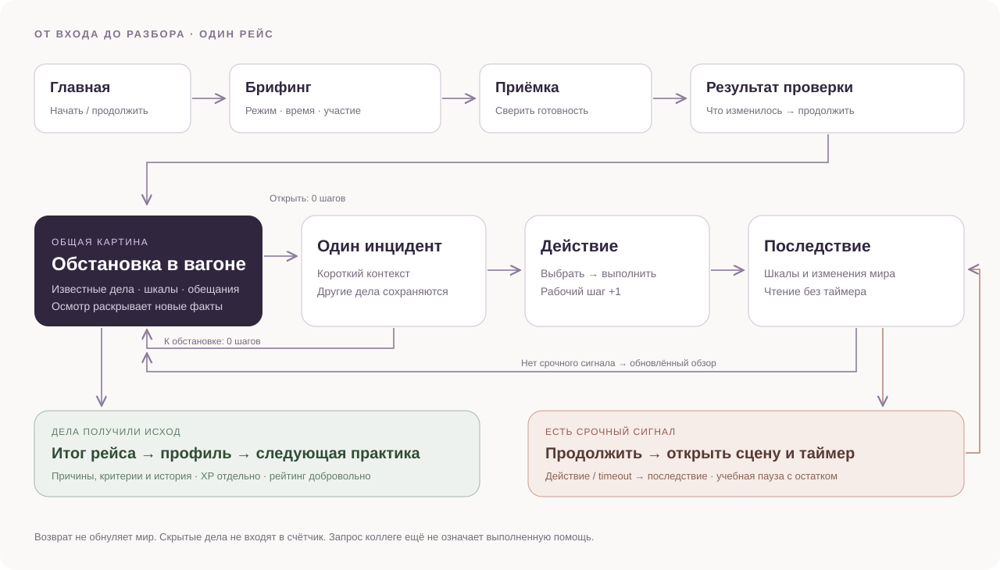

Навигацию приходится угадывать
На телефоне видны абстрактные символы без подписей. Новая основа — три подписанных раздела и явный возврат к обстановке.
Открыть текущий mobile-экран ↗Понятная обстановка. Одно решение в фокусе.
Кликайте внутри макета. Переключатель экрана открывает демонстрационное состояние. Полный путь начинается с главной.
Игрок видит только известные факты. Два дела могут оставаться открытыми одновременно, но на экране решения — один диалог.

До осмотра скрытая проблема не показана даже в счётчике. Обычное чтение не тратит шаги.
Второе дело и обещание сохраняются. Возврат к обстановке ничего не обнуляет.
Запрос, подтверждение принятия и проверка исполнения показаны раздельно.
Пройдены все пять модулей, результаты, профиль, история и повтор, уведомления и три области рейтинга. Проверены desktop и mobile в браузере.
На телефоне видны абстрактные символы без подписей. Новая основа — три подписанных раздела и явный возврат к обстановке.
Открыть текущий mobile-экран ↗Подсказка слипается с карточкой. В концепции — 20 px до первого варианта, 12 px между вариантами, 16–20 px внутри.
Посмотреть текущий игровой экран ↗Такой cookie-баннер в игре не найден. В дизайн-правила включены контроль слоёв, границ окна и видимости основного действия.
На проверенных размерах кнопка не обрезалась. Фиксированная высота и overflow:hidden остаются риском. На 320 px обнаружена горизонтальная прокрутка.
| Сейчас | Предложение |
|---|---|
| 11 входов в модули: hero + маршрут + карточки | Один главный вход в рейс; точечная практика ниже |
| Большая декоративная сцена до первого действия | Короткий контекст, видимые шкалы, варианты рядом |
| Технические подписи и мотивационные числа в игре | Состояние рейса в фокусе; XP и история в профиле |
| «Следующая ситуация», «К смене» | «К обстановке в вагоне», «Перейти к срочной ситуации» |
Сохраняем тёмную основу и сиреневый акцент. Цвет статуса всегда сопровождается словами. Красный появляется только там, где он нужен.
Фон
#121419
Поверхность
#1B1E26
Действие
#C3B3FF
Выполнено
#8BD8B4
Внимание
#F4CE8B
Критическое
#FFACA5
Решение начинается
с внимания.
Заголовок 28–40 · текст 16 · пояснение 13–14.
Строка 1.5–1.6, без мелкого текста в ответах.
Поля 40 / 20. Карточки 24 / 20.
Варианты: промежуток 12, padding 16–20.
Кнопка минимум 48 по высоте.
Карточки растут по содержимому. Декор не обрезает CTA.
Одна ведущая цель. Явный focus. Вариант ответа выбирается без угадывания иконки.
Стабильные цифры, только одно окно. Пауза подтверждена, остаток сохранён.
Уведомления не накрывают рабочий выбор. Основное действие остаётся в потоке страницы.
Каждый экран подготовлен для desktop и mobile. «Инцидент» и «Выбор действия» — два состояния одного экрана, без лишнего промежуточного перехода.